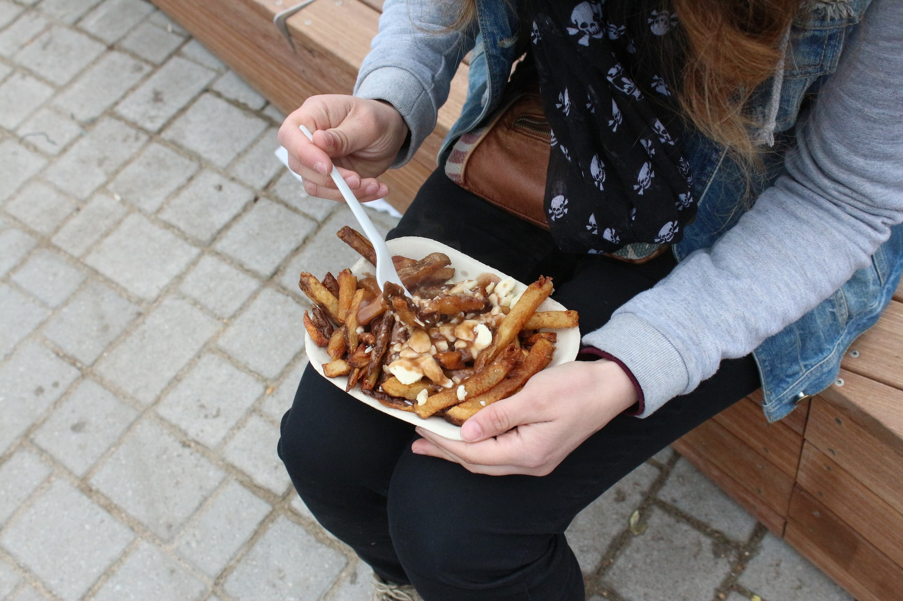
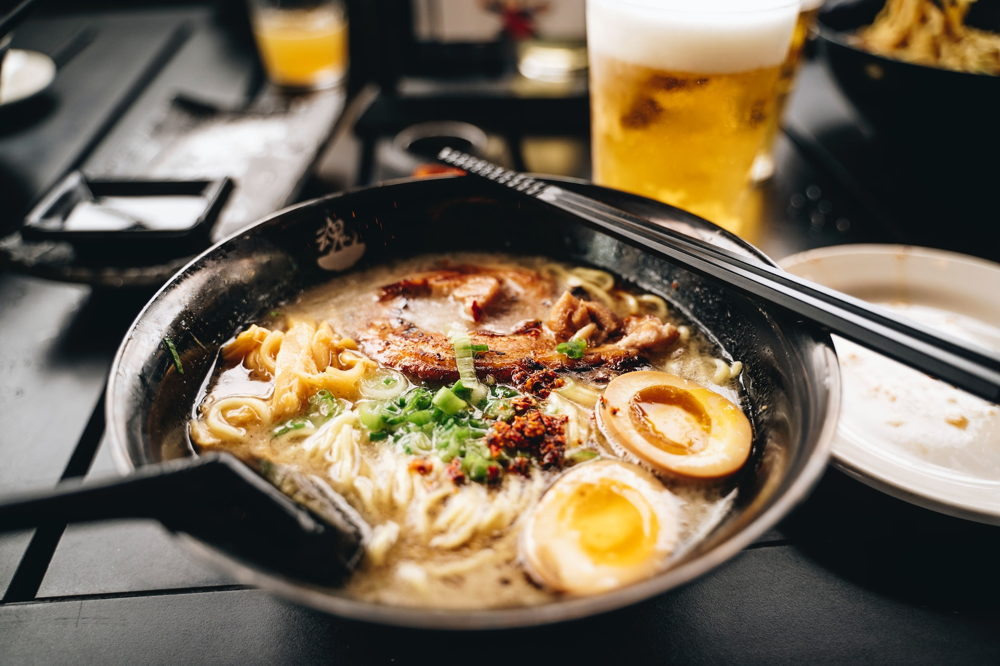
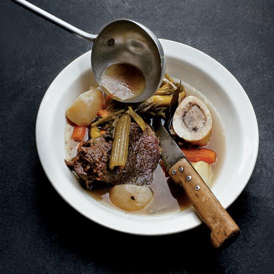

Comfort food is a universal concept that transcends cultures, languages, and borders. Each country has its own take on what constitutes as comforting, and exploring different cuisines can
broaden your culinary horizons and provide a unique dining experience. Here are some delicious comfort food dishes from around the world that are worth trying.
In conclusion, comfort food comes in many forms and is a reflection of the culture and traditions of each country. By trying out different comfort foods from around the world, you can experience new flavors and textures that will satisfy your cravings and transport you to different parts of the world. From the spicy flavors of Indian biryani to the savory taste of French pot-au-feu, each cuisine reflects the unique history and traditions of the people who created it. Exploring the diverse flavors of regional foods allows us to appreciate the richness and diversity of different cultures around the world.
- Poutine is a beloved Canadian dish that consists of crispy french fries, cheese curds, and gravy. It's the ultimate comfort food, with its warm, cheesy, and savory flavors that satisfy your cravings on a cold winter day. Originating in Quebec, Canada in the late 1950s, poutine is a dish of french fries topped with cheese curds and gravy. It has become a Canadian staple and can now be found in various forms and flavors across the world. 
- Ramen is a popular Japanese dish that's perfect for a comforting meal. Originally from China, ramen has become a beloved Japanese dish. It is made with wheat noodles served in a meat or fish-based broth, often flavored with soy sauce or miso. The dish has a rich history and has evolved into many different regional styles. It consists of noodles in a savory broth, topped with meat, vegetables, and soft-boiled eggs. Each region in Japan has its own unique take on ramen, so there are endless variations to try. 
- Biryani is a fragrant Indian rice dish that's loaded with spices, herbs, and tender meat or vegetables. It is typically made with spices, rice, and meat, although vegetarian versions also exist. The dish has been enjoyed for centuries and has become popular globally due to its unique blend of flavors and textures.It's a one-pot meal that's perfect for sharing with friends and family, and it's sure to warm you up from the inside out.
- Shepherd's pie is a classic dish that's both hearty and comforting. A traditional British dish, shepherd's pie is a casserole made of ground lamb or beef, vegetables, and mashed potatoes. It was originally created as a way to use up leftover meat and vegetables, and has since become a staple of British cuisine. It consists of layers of mashed potatoes, ground beef, and vegetables, all baked together until golden and crispy on top. It's the perfect dish for a cozy night in.
- Tacos al Pastor is a popular Mexican street food that's packed with flavor and spice. They are made of spit-grilled pork served on a tortilla with pineapple, onion, and cilantro. The dish is a blend of Mexican and Lebanese flavors, as it was inspired by Lebanese immigrants who came to Mexico in the early 1900s. It consists of marinated pork cooked on a spit and sliced thinly, then served on a soft tortilla with pineapple, cilantro, and onion. It's a comforting and satisfying meal that's perfect for any occasion.
- Moussaka is a traditional Greek dish that's made with layers of eggplant, minced meat, and creamy béchamel sauce. The dish has been enjoyed in Greece for centuries and is often served as a main course during special occasions and holidays. It's a hearty and warming dish that's perfect for a chilly night, and it's also great for entertaining guests.
- Pot-au-Feu is a French beef stew that's loaded with vegetables and served with crusty bread. It is a hearty and flavorful stew that has been enjoyed in France for centuries. Pot-au-feu is often served with crusty bread and a variety of condiments, such as mustard and horseradish. It's a simple yet comforting dish that's perfect for a cozy night in with a glass of red wine. 


In conclusion, comfort food comes in many forms and is a reflection of the culture and traditions of each country. By trying out different comfort foods from around the world, you can experience new flavors and textures that will satisfy your cravings and transport you to different parts of the world. From the spicy flavors of Indian biryani to the savory taste of French pot-au-feu, each cuisine reflects the unique history and traditions of the people who created it. Exploring the diverse flavors of regional foods allows us to appreciate the richness and diversity of different cultures around the world.